Radiator
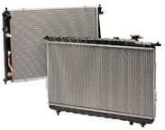>
The radiator is necessary to regulate engine temperature through a heat exchange process involving refrigerant and air flow. The coolant helps to cool the automobile engine by absorbing the heat generated by its operation. The heated refrigerant is cooled by being passed through the radiator before being returned the engine block to help maintain its proper operational temperature.
Cooling Fan & Shroud
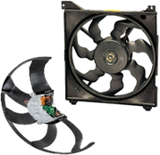
The industry award winning Cooling Wave Fan is mounted to the engine to help boost the exchange of heat. The unique design of this fan in a wave-like form maximizes air flow, reduces operational noise and plays a significant role in enhancing fuel efficiency. When paired with the Hanon Systems brushless DC (BLDC) motor, which eliminates noise and improves durability and efficiency by removing brushes, automakers benefit from low power consumption, less weight and lower emissions.
Charge Air Cooler (CAC)
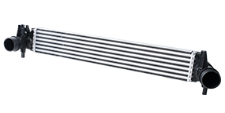
Intercooler optimized combination of air can be supplied to the vehicle’s engine through the heat exchanging processes of heated air that has been pressurized by Turbo Chargers and atmosphere. It provides maximum heat exchange performances with its optimized fins and tubes, strong durability and simple structures.
Air CAC
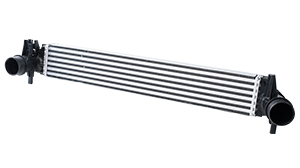
Hanon Systems offers a portfolio of air charge air coolers that transfer heat from boosted air into ambient air. Variants support diesel or gasoline engine package constraints, including full-face, brick and wheel arch styles. By leveraging global standard designs, with core depths ranging from 30 to 105 mm, Hanon Systems has reduced costs while providing package flexibility. Heat exchanger expertise and analytical tools allow tube and fin geometry optimization to meet performance, efficiency and pressure drop requirements.
Water CAC
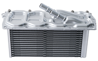
Hanon Systems offers a portfolio of water-cooled charge air coolers that transfer heat from intake air to a coolant loop using a low temperature radiator. This secondary loop architecture makes it possible to position the cooler away from the front of the engine compartment, without a loss of charge air pressure. Hanon Systems’s water-cooled charge air coolers deliver increased package flexibility as stand-alone units or when integrated into the engine intake manifold
EGR Systems (Cooler, Valve and Bypass)
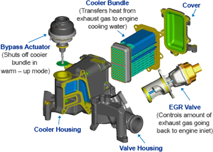
Recirculating and cooling exhaust gas before re-introduction to the engine lowers engine combustion temperatures that produce harmful nitrogen oxide (NOx) emissions. An exhaust gas recirculation (EGR) module combines an EGR cooler, valve and bypass into a single unit. Hanon Systems is one of few suppliers capable of designing and manufacturing all EGR components to deliver a balanced and optimized system. The EGR module offers an alternative to selective catalytic reduction (SCR) and is available for high and low pressure applications with gasoline and diesel engines.
High Pressure EGR
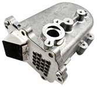
Close-coupled to the engine, hot exhaust gas is cooled by engine coolant and recirculated to the intake manifold
Low Pressure EGR
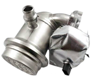
Downstream the exhaust pipe, hot exhaust gas is cooled by engine coolant and recirculated to the air intake prior to the turbocharger
Pumps
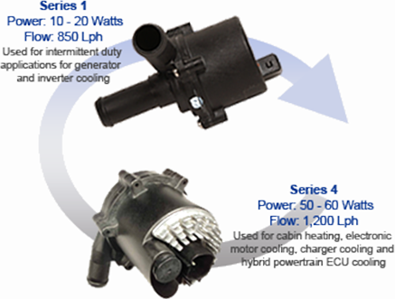
Electronic coolant pumps are a key component to supply coolant on-demand for critical thermal management systems. By cooling the engine precisely and only as required, electronic coolant pumps reduce fuel consumption with the additional benefit of curbing friction losses and emissions. The pumps support a wide range of next generation thermal management systems where an engine belt may not be available, including cooling of batteries, DC/DC converters and power electronics. The electric coolant pumps use brushless DC(BLDC) motor technology to offer a wide range of power. The on-board electronics deliver precise, variable flow control and respond rapidly to provide engine cooling and cabin comfort, especially at cold start. The electronic oil pumps support full hybrid transmission functionality (as start-stop, sailing or electric driving) thanks to transmission oil supply independent from engine running conditions. They operate to supplement the mechanical oil pump, resulting in significant reduction in fuel consumption and CO₂ emissions.
Valves
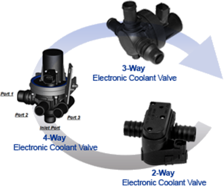
"Electronic coolant valves route coolant in various loops of the cooling circuit, depending on thermal controller requirements. A DC motor-driven ball valve delivers discrete flow control of coolant. Hanon Systems electronic coolant valves are applied in naturally aspirated and boosted combustion engines, start/stop technology, hybrid and electric vehicles (HEV/EV) and fuel cell vehicles. The valves support a wide range of next generation thermal management systems, including cooling of batteries, DC/DC converters and power electronics."
Electronic Throttle Body (ETB)
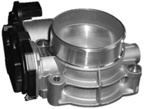
The electronic throttle body (ETB) controls the volume of air flowing into the engine and is a main part of the engine emission management system. As part of a drive-by-wire strategy, the ETB delivers precise air flow by receiving flap position information from the engine control unit via the SENT protocol. Precise and quick response of the throttle angle keeps the engine torque at a constant level under a full spectrum of engine mapping and load conditions. This accuracy and speed translates to improved fuel economy and emissions.
Hanon Systems utilizes automated manufacturing, incorporating the latest technology in welding, assembly, monitoring and testing in one piece flow production.
Electronic Wastegate Actuator (eWGA)
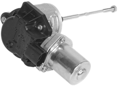
A wastegate bypasses a portion of exhaust flow around the turbine of a turbocharger to control boost pressure. Hanon Systems’s electronic wastegate actuator (eWGA) precisely regulates the maximum turbo boost pressure to enhance engine performance, durability and drivability. The quick regulation shortens the time required to bring the catalyst up to operating temperatures by providing a wide-open wastegate and maximizing direct exhaust flow during cold start.
eWGA features the latest advancements in electronic actuators for accurate control over a wide range of operating conditions. A patented and proprietary helix gear design delivers high closing force for increased boost pressure. The unit offers direct positive sensing of stem travel for precise control. The mating design allows flexible alignment to connect the turbocharger and wastegate flap.
Cold Storage Evaporator
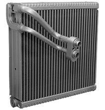
Cold storage evaporator technology was developed to maintain a consistently comfortable interior when in ISG (idle stop and go) mode and also improve fuel efficiency of a vehicle when slowing or stopping. When a vehicle stops the compressor of the air conditioner also stops as it is driven by a belt attached directly to the engine. This makes it impossible for the air conditioner to maintain the target interior temperature. The role of the cold storage evaporator is similar to that of existing evaporators attached to an HVAC module, however this type delays the time when the air conditioner restarts to its maximum level in order to maintain proper interior temperature while the engine is stopped thereby improving fuel efficiency when in ISG mode..
Condenser
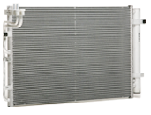
Transmission Thermal Management
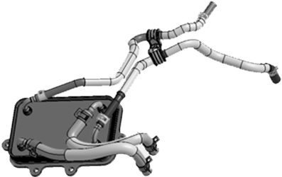
The transmission thermal management system improves automatic transmission performance by reducing friction at startup by ensuring that the oil in the transmission case is properly heated prior to running. A single heat exchanger can both heat and cool transmission oil by tapping into the engine cooling system
Auto Transmission Warmer & Cooler
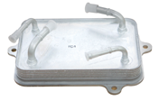
Auto transmission fluid warmer/cooler, for which Hanon Systems has received a New Excellent Technology (NET) Certificate, contributes to enhanced fuel efficiency by simultaneously regulating two roles with a single heat exchanger. This next-generation eco-friendly technology helps to boost operational performance and improve fuel efficiency by both cooling and maintaining extremely hot fluid at optimal temperatures, along with the capability to rapidly heat fluid for the regulation of auto transmission operation
Electronic Transmission Oil Pumps
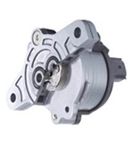
The electronic oil pumps support full hybrid transmission functionality (as start-stop or electric driving) thanks to transmission oil supply independent from engine running conditions. Hanon Systems electronic oil pumps operate to supplement the mechanical oil pump, resulting in significant reduction in fuel consumption and CO₂ emissions. Also electronic oil pumps are applicable for lubrication and cooling of EV drives and have cold start capacity down to -40°C.
High Efficiency Transmission Oil Pumps
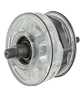
The high efficiency binary transmission oil pumps provide unprecedented levels of overall efficiency for primary transmissions lubrication and actuation functions, while retaining high pressure capabilities and a compact size.